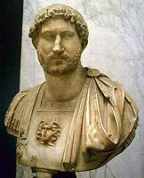

Augusto (63 a.C. - 14 d.C., emperador: 27 a.C. - 14 d.C.)

General, pol�tico y el primer emperador romano. De gran paciencia y habilidad, transform� la vida romana trayendo prosperidad y paz al mundo grecorromano. Su verdadero nombre era Cayo Octavio, el cual cambi� tras la muerte de su padre adoptivo, Julio C�sar, primero por Cayo Julio C�sar Octaviano y despu�s por Augusto o C�sar Augusto.
Octavio naci� en Roma el 23 de septiembre del a�o 63 a.C. Hijo de un pretor y de Atia, sobrina de Julio C�sar. Era sobrino nieto de Julio C�sar, a quien sucedi� como gobernante del Estado romano. C�sar estaba orgulloso del joven y lo present� en el Colegio de Pont�fices (sacerdocio principal romano) a la edad de diecis�is a�os. Cuando C�sar fue asesinado en el a�o 44 a. C., Octavio estaba en Iliria, donde serv�a en el Ej�rcito; a su regreso a Italia, se enter� de que era el heredero adoptivo de C�sar.
Tiberio (42 a.C. - 37 d.C.; emperador: 14 - 37)
Tiberio, hijo menor de Agripa y Livia, era el sucesor designado de Augusto. El Senado le otorg� las mismas prerrogativas que a su antecesor, asegur�ndose su fidelidad frente a la popularidad alcanzada por Germ�nico. La muerte de Germ�nico en Siria motiv� que las acusaciones sobre un presunto envenenamiento se acercaran al emperador, produci�ndose una fuerte convulsi�n en la familia imperial. Los continuos complots motivaron que Tiberio fortaleciera las bases militares del Imperio, estableciendo a los pretorianos en Roma. El jefe del pretorio, Sejano, recibi� el gobierno cuando Tiberio abandon� el poder en el 26 para entregarse a los placeres. Cinco a�os despu�s regres� y Sejano fue condenado a muerte y ejecutado. Durante su reinado, las provincias gozaron de buena salud, pero paulatinamente se impuso un r�gimen de terror. Hacia el a�o 33 Tiberio regres� a su retiro de Capri.
Caligula (12 - 41; emperador: 37 - 41)
Al morir Tiberio le sucedi� Cayo Julio C�sar Germ�nico, m�s conocido como Cal�gula. Su sobrenombre se debe al uso, desde peque�o, del calzado militar llamado caliga. Cal�gula era hijo de Germ�nico y Agripina la mayor. Tiberio le adopt� y le design� sucesor junto a su sobrino Tiberio Gemelo pero el Senado se decant� por Cal�gula, esperando de �l que acabara con el r�gimen tir�nico de su antecesor. En un primer momento satisfizo a todos, pero pronto la situaci�n cambi� cuando orden� matar a su primo Tiberio Gemelo y subir los impuestos. Los gastos crecieron desmesuradamente tanto por las campa�as militares emprendidas (Germania y la Galia) como por los triunfos que se realizaban a continuaci�n. El emperador empezaba a mostrar signos de desequilibrio mental al exigir honores divinos y desear que su caballo favorito fuera nombrado senador. El r�gimen de terror motiv� la organizaci�n de un complot en el a�o 39. Los promotores fueron descubiertos y el emperador acentu� la pol�tica de terror, oganiz�ndose un segundo complot y siendo asesinado por los pretorianos el 24 de enero del a�o 41.
Claudio (10 a.C. - 54 d.C; emperador: 41 - 54)
Cuando Cal�gula muri� asesinado no estaba establecido qui�n deb�a sucederle. Los pretorianos encontraron escondido en palacio al t�o del emperador, Claudio, apartado de la posible sucesi�n por su torpeza, su aspecto distra�do y la amnesia casi permanente que le afectaba. Pero era hermano de Germ�nico y eso fue suficiente para que los pretorianos le designaran emperador. Claudio supo rodearse de un buen equipo de expertos que dirigieron el gobierno en su nombre. Reform� la administraci�n y form� un aparato burocr�tico central para el Imperio. Concedi� amplios derechos de ciudadan�a al tiempo que restring�a la pol�tica de terror impuesta por sus antecesores. Su mayor empresa ser� la conquista de Britania. Se cas� en cuatro ocasiones. La tercera es la famosa Mesalina, conocida por su libertinaje sexual que escandalizaba a la nobleza romana. La cuarta esposa fue su sobrina Agripina, a quien se considera responsable de su envenamiento.
Nerón (37 - 68; emperador 54 - 68)
Hijo de Domicio Ahenobardo y de Agripina menor y sobrino de Cal�gula, Ner�n es el �ltimo representante de la familia Julia-Claudia. Fue elegido emperador por los pretorianos con 17 a�os, siendo sus primeros a�os de gobierno bastante positivos. Hizo matar a su madre, que obstaculizaba su boda con Popea Sabina. Una vez casado, inici� una etapa de gobierno caracterizada por los desmanes, el libertinaje y las pasiones teatrales. En el verano del a�o 64 a.C. tiene lugar en Roma un espectacular incendio que dur� seis d�as, consumiendo por completo tres de los catorce barrios de la urbe.El emperador acus� a los cristianos del incendio. Desde este momento el emperador inaugur� un r�gimen de terror con numerosas condenas y confiscaciones. Julio Vindice y Sulpicio Galba se rebelar�n apoyados por las legiones de Germania. Los pretorianos se vincularon al movimiento y el Senado depuso a Ner�n, declar�ndolo fuera de la ley. El emperador huy� de Roma y se suicid� en una de sus villas el 6 de junio del a�o 68.
Nerva (30 - 98; emperador: 96 - 98)
El primer miembro de la familia de los Antoninos fue Nerva, elegido tras el complot que acab� con la vida de Domiciano. Debido a su escasa experiencia militar y a las tensiones surgidas en el seno del ej�rcito, Nerva adopt� y nombr� c�sar a uno de los m�s afamados generales, Marco Ulpio Trajano. Con este gesto se granje� la simpat�a del ej�rcito e inauguro la transmisi�n del poder en vida. Nerva ejerci� su gobierno con el pleno apoyo del Senado. Nerva puso las bases del sistema alimenticio de asistencia estatal para ayudar a las clases m�s empobrecidas. Tambi�n promovi� una ley agraria por la que se compraban tierras para su distribuci�n entre las clases m�s desfavorecidas.
Trajano (30 - 117; emperador: 98 - 117)
Trajano fue el primer ciudadano romano de origen provincial (era de Hispania) que accedi� al trono imperial. Pronto destac� en la carrera militar tanto en Germania como en Oriente. Renov� el Senado al nombrar senadores procedentes de las provincias orientales y fue eliminando numerosas tareas que fueron conferidas a la burocracia. Llev� a cabo un intenso programa de infraestructuras tanto para el desplazamiento de las tropas como para el comercio, que se vio favorecido. Puentes, calzadas y canales fueron construidos. La pol�tica exterior estuvo enfocada hacia la conquista. Convirti� Dacia en provincia romana con lo que el mar Negro quedaba bajo su influencia. La campa�a est� narrada en los relieves de la famosa Columna de Trajano. Un ataque de par�lisis le provoc� la muerte en Cilicia.
Adriano (76 - 138; emperador: 117 - 138)

Adriano naci� en la ciudad b�tica de It�lica, en el seno de una familia romana. Al quedar hu�rfano, fue adoptado por el emperador Trajano. Busc� la paz como m�ximo objetivo.. Uno de sus primeros objetivos ser�a conocer los problemas de los s�bditos imperiales por lo que llev� a cabo una amplia serie de viajes por todos los confines del Imperio, haci�ndose eco de las necesidades que le eran presentadas. En el a�o 134 regres� definitivamente a Roma. Este momento de paz trajo prosperidad econ�mica al imperio. Adriano tambi�n se interes� por las reformas administrativas y econ�micas. En las cercan�as de T�voli edific� una suntuosa villa que recibe el nombre de Villa Adriana donde recogi� las reproducciones de las obras de arte que m�s le impresionaron durante sus viajes. Como sucesor eligi� a Antonino P�o.
Antonino Pío (86 - 161; emperador: 138 - 161)
Antonino P�o era miembro de una familia de origen galo procedente de Lanuvio. Su adopci�n por el emperador Adriano le permiti� ser nombrado emperador a la muerte de �ste, iniciando un largo reinado caracterizado por la calma y la prosperidad econ�mica. La situaci�n de los esclavos mejor� durante su gobierno al tiempo que prohibi� la persecuci�n de los cristianos y permiti� la circuncisi�n de los jud�os. En las fronteras se vivieron per�odos de intensa actividad, especialmente en Britania donde se tuvo que construir un nuevo muro al norte del levantado por Adriano. En Africa, los ataques de los mauritanos obligaron a avanzar posiciones en el interior del Atlas. Tambi�n se vivieron algunas revueltas internas entre los hebreos, en Acaya y Egipto. Por sus virtudes, Antonino recibi� del Senado el honor�fico t�tulo de P�o. Marco Aurelio fue su sucesor.
Marco Aurelio (121 - 180; emperador: 161 - 180)
Miembro de una familia de origen hisp�nico, Marco Aurelio recibi� una esmerada educaci�n interes�ndose desde joven por la filosof�a. Adriano oblig� a Antonino P�o a adoptar al joven Marco Aurelio. A la muerte de Antonino P�o, le sucedi�. El reinado de Marco Aurelio supuso el inicio de la crisis general que vivir� el Imperio a lo largo del siglo III. Se reclut� un nuevo ej�rcito en el que participaron esclavos y gladiadores. El propio emperador tuvo que aportar sus joyas para sufragar los gastos. Pero el esfuerzo econ�mico dio sus frutos y tras casi seis a�os de guerra los b�rbaros se retiraron. Pocos a�os despu�s hubo una nueva rebeli�n de b�rbaros en el Danubio. El emperador fallec�a en el transcurso de la guerra en Viena. Le sucedi� su hijo C�modo.